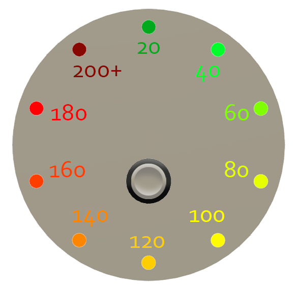
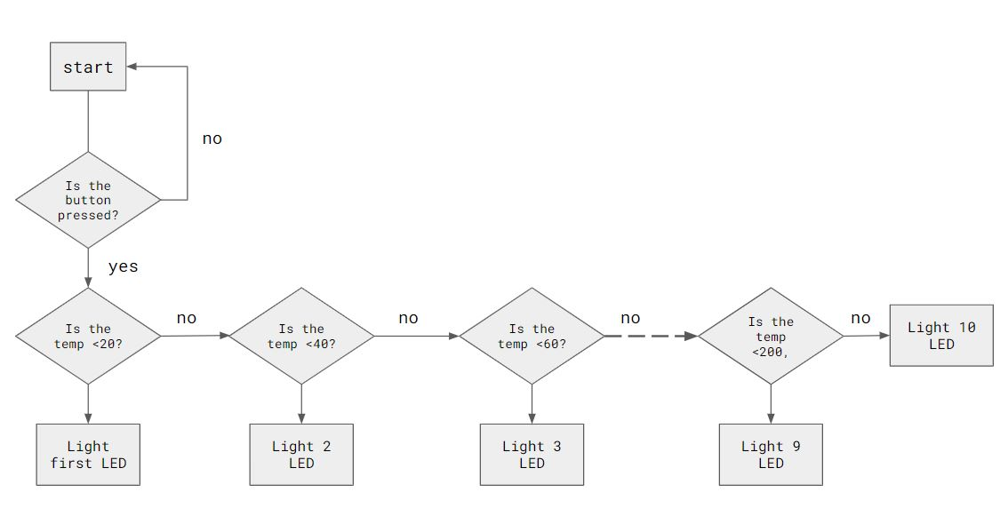
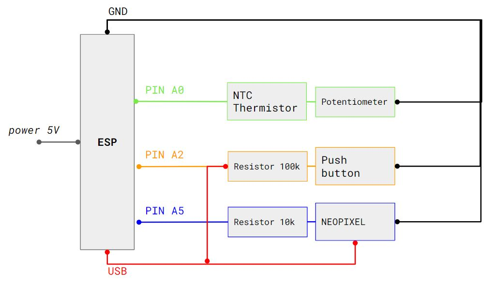

fabacademy
challenge 3
idea & purpose

We decided to explore the possibility of adding a thermometer so we could transmit the data to the user at the moment of cooking and to collect the data for future developments of the prototype.
Physical interface The system will work with a heat sensor wired to an ESP32 microcontroller in which we can integrate some led lights to communicate to the user the temperature that the oven is reaching.
Digital interface We will also add a small LCD screen displaying the cronometer so they can know how much time their oven has been runnning and in this way make the user experience more reliable for a first approach to this alternative technologies.
Community platform The collected data will go into a platform in which we can display it for the users and create a community in which they can share their progress and tips regarding their use of the oven. This will help us develop improvements to the prototype and understand how the user feels about these alternative systems and low-techs.
concept: solar oven with thermometer
We were trying to use the less material possible or to use the scraps that we had around the FabLab. We decided then to use the plywood scraps and build the prototypes manually so no use of CNC was needed. This helped us also to get more acquainted with the machines in the workshop and to gain confidence in our fabrication skills. We only used the laser cutter for more precise dimensions and for smaller details. Also to laser cut the acrylic ring that would diffuse the light of the LEDs. We wanted to leave our design in a crude finish so we can also promote the use of less things and display the essential things only. Also it gives a more natural look.
fabrication: electronics
 For the electronics we tried to reuse most of our parts. We used the kit we had from the beginning of the course for the basics like breadboard, adafruit feather, wires and for the LEDs we cut and reused some that we found in the FabLab. The speakers and amplifier were gifted to us from a car workshop and FabLab. Also the solar panels were borrowed from the FabLab. In this way we were sure to reuse and try to rescue as much of the electronics as we could and leave our design more responsible towards our environment.
//We started testing the temperature sensor with a breaboard so we connected ground (-) and voltage (+) to USB. The pin we used is A0. //For the LED lights we used the NeonPixel strip. We connected to ground (-), voltage (+) to usb and the pin A1. We realised this was the only pin that worked for //some reason. We added a resistor in between the jumping wires of 330ohms.
fabrication
In total we were fabricating three different devices at the same time. For the solar thermometer we first finished our next solar oven model. Therefore we found old window glass and also old mirrors on the street which we wanted to recycle. So we bought a glass cutter and cutted the old windows and glasses. Also we build a wooden box out and two frames out of plywood. Then we added cork boards which we screwed on all sights of the wooden box to get the insolation. Then we sprayed all five sights black and glued the mirror pieces on it. When trying the oven the first time we realised that the tinted glass is to dark and doesn’t let enough sun going through. So we changed the glass into a thinner and not tinted frame glass.
Then we produced the thermometer. After finishing the electronics codes for the button, LED´s and the thermometer sensor we laser cut the board for the front and built a box out of plastic bowl and a flexible piece of wood. The part that took us the most time was soldering the leds, because we had 10 leds and 30 small cables.
And at last we designed and produced a music box. We wanted to make a solar powered music speaker for our solar brunch event. So we bought old speakers and an amplifier. Also we reused solar panels, which we found. So we laser cut the front board and built a box out of plywood and integrated the speakers and amplifier. Als we were soldering the cables and connected them with the solar panels.

our feedback
considerations We could have focused just on the solar oven with the thermometer instead of building the music box, but we wanted to have everything ready for our solar brunch event, which was two days later.
future steps Now we wanted to finish the thermometer box and attach it to the oven. Also we want to build two other solar oven designs. More information
FABACADEMY